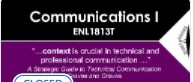

|
Tech Math for Computer Science |
MAT8001C |
Level 1 |
The study of algebraic and transcendental functions is an essential
prerequisite to Calculus. Students manipulate algebraic expressions,
solve algebraic equations and linear systems and learn the
properties of and graph algebraic and transcendental functions.
Students investigate computer number systems in addition to Boolean
algebra and logic to help solve problems involving computer systems.
|
|
Introduction to Computer Programming |
CST8116 |
Level 1 |
Possessing the fundamentals of logic, problem-solving and
programming language structure provides a solid foundation for
further study in the field. Students develop introductory knowledge
of computer programming with emphasis on problem analysis and
design, using algorithms, pseudocode, flowcharts, UML Class Diagrams
and testing, with the Java programming language used as a means to
implement problem solution designs.
|
|
|
Introduce to Database |
CST8251 |
Level 1 |
Students learn the fundamentals of Relational Databases design using
Entity Relation diagrams, and use SQL to create, modify and query a
database. Students design and create databases that are
maintainable, secure and adaptable to change in business
requirements, using Normalization. Students are able to compare and
appreciate a Database Management System (DBMS) and its components
with legacy systems.
|
|
|
Computer Essentials |
CST8101 |
Level 1 |
The essentials of computer software, hardware, and laptop management
form the foundation for building further technical programming
skills. Learn to configure your laptop environment, basic PC and
troubleshoot problems. Create backups, install virus protection, and
manage files through a basic understanding of the Windows Operating
System.
|
|

|
Communications I |
ENL1813T |
Level 1 |
Communication remains an essential skill sought by employers,
regardless of discipline or field of study. Using a practical,
vocation-oriented approach, students focus on meeting the
requirements of effective communication. Through a combination of
lectures, exercises, and independent learning, students practise
writing, speaking, reading, listening, locating and documenting
information and using technology to communicate professionally.
|
 |
Object Oriented Programming (Java) |
CST8284 |
Level 2 |
Learn object oriented programming methodology using the Java
programming language. Object oriented concepts, such as
encapsulation, inheritance, abstraction and polymorphism are covered
and reinforced with practical applications.
|
|
Web Programming5 |
CST8285 |
Level 2 |
Learn the basics of web programming, website design and
implementation. JavaScript, HTML5, and PHP are used to explore
web-based solutions to problems of increasing interactivity and
complexity.
|
|
|
Database Systems |
CST2355 |
Level 2 |
Students acquire practical experience using market-leading
object-relational database management systems like Oracle and MySQL.
Students obtain hands-on experience with advanced engineering
modeling tools along with SQL, SQL scripts and programming with
Oracle's PL/SQL blocks.
|
|
|
Operating System Fundamentals (Gnu/Linux)
|
CST8102 |
Level 2 |
Learn the basic concepts and components of Operating Systems (OS),
and how they function and interact with hardware and software
components. Explore the details of operating system structures,
process management, storage management, installation, configuration,
and administration both in theory and through practical assignments
based on the GNU/Linux operating system.
|
|
Cooperative Education Readiness |
GEP1001 |
Level 2 |
Students are guided through a series of activities which prepares
them for their co-op job search term. Through a detailed orientation
students learn the cooperative education program policies and
procedures related to searching and securing a work term
opportunity.
|